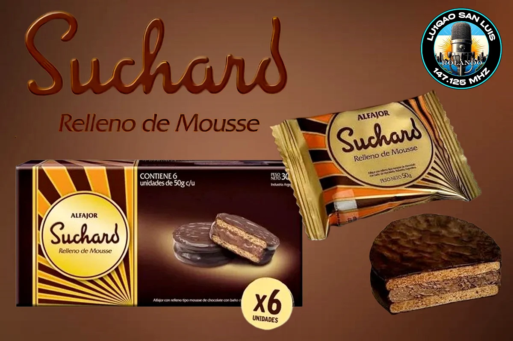

Desafío Recuerdos: Alfajor Suchard.

📡 Detalles de la Activación APRS
- 📻 Operador: LU1QAO-3
- 🔢 Palabra Clave:
CQ SUCHARD - 📅 Fecha de Inicio: 01/09/2026 ⏰ 00:00 UTC
- 📅 Fecha de Cierre: 01/09/2026 ⏰ 23:59 UTC
- 🌐 Confirmación: 144.390 MHz 2M PKT / QRZ.com
Reseña de la Actividad
El alfajor Suchard nació en Argentina en 1984 y revolucionó el mercado al introducir el relleno de mousse de chocolate, rompiendo con el dominio absoluto del dulce de leche. Creado por la compañía (bajo la supervisión de multinacionales como Kraft/Mondelez más adelante), se destacó por sus tapas más bien duras y crocantes combinadas con una suave crema de mousse y un baño de chocolate semi-amargo. Durante las décadas de 1980 y 1990, se convirtió en un ícono de los quioscos, muy recordado por sus publicidades y por tener un público fiel que adoraba su sabor intenso a cacao.
Datos Históricos
Desaparición y el fenómeno Cachafaz: A principios de los años 2000 (en 2001), la marca dejó de producirse en Argentina, transformándose en una golosina de culto muy extrañada. El vacío y la inspiración: Aprovechando su ausencia, marcas emergentes como Cachafaz diseñaron alfajores de mousse con un envoltorio metalizado vertical muy similar al clásico de Suchard. El regreso en 2013: Gracias a la presión de grupos de fanáticos en internet, Mondelez decidió relanzar Suchard al mercado argentino en 2013. Sin embargo, debió competir con un mercado reformulado y con la marca Cachafaz ya instalada, lo que derivó en disputas legales por el diseño del packaging que finalmente concluyeron en una convivencia pacífica en góndolas al considerarse diferenciables. Actualmente, el alfajor Suchard original de los 80 y 90 ya no se encuentra en los quioscos, quedando en la memoria colectiva como uno de los grandes hitos y nostalgias de la golosina argentina.
“Desafío Recuerdos: Memorias de la industria argentina”
Cerrá los ojos por un segundo y pensá en los objetos de tu infancia. Esos nombres que veíamos todos los días en la tele, en las góndolas o en nuestras casas y que hoy ya son leyenda. Sintoniza el Desafío Recuerdos, revive esos momentos junto a colegas de todo el país y el mundo acumula las 10 QSLs del ciclo para alzar el premio mayor.
📋 Bases y Condiciones
- ¿Cómo participar? Es automático. Solo debes enviar tu trama APRS con la palabra clave del evento al operador LU1QAO-3. El sistema registra tu QSO (un solo contacto válido por evento) y te acumula los puntos sin que tengas que hacer ningún trámite.
- ¿Qué se necesita? Completar las 10 activaciones exclusivas del ciclo. ¡No te pierdas ninguna fecha para llegar a la meta y alzar los laureles!
- Premio: Certificado de Oro digital personalizado entregado al completar la totalidad de los eventos.
📅 Cronograma de las 10 Fechas del Desafío
| Fecha | Evento / Temática |
|---|---|
| 01/09/2026 | 1º Alfajor Suchard |
| 04/09/2026 | 2º Zapatillas Flecha |
| 08/09/2026 | 3º Televisor Grundig |
| 11/09/2026 | 4º Hamburguesas Pumper Nic |
| 15/09/2026 | 5º Bicicleta Aurora |
| 18/09/2026 | 6º Heladera Siam |
| 22/09/2026 | 7º Camisas y pantalones Grafa |
| 25/09/2026 | 8º Aperitivo Amargo Obrero |
| 29/09/2026 | 9º Utilitario Rastrojero |
| 02/10/2026 | 10º Bizcochitos Canale |
Tabla de Posiciones y Evolución
Seguí el desempeño de todos los colegas en tiempo real. El orden se calcula por cantidad de eventos acumulados (de mayor a menor) y se muestran alfabéticamente por indicativo.
| Pos. | Indicativo | Eventos / 10 | Eventos Completados |
|---|---|---|---|
| Cargando posiciones o esperando primer archivo de datos... | |||